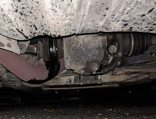

-
So I've just had this happen in quite spectacular fashion. I'm pretty sure I have this on film from the chase car I'll try and get edited later.
I am so rusty on my Z mechanically as I've had it in storage for 2 years and it's been so reliable I forgot everything lol. I've just taken it out and it's been going awesome It's putting down maybe 490-500rwhp.
It just went boom. The chase car driver said a ton of sparks come out the back then smoking which I can only presume was the oil on the exhaust. Can I drive it like this? I have it stranded at my brothers place like this right now.
It seems to drive okay but I don't want to hurt it. Finally what am I looking at parts wise? The last Z31 I saw for sale here in Australia was $29k if you can believe it lol
Cheers for any input. I love this car!Last edited by 300zxt; 07-10-2020, 07:31 AM. -
I'd say you're looking at a new half-shaft and a new differential seal at the minimum.
I've gotten parts shipped to the US from Australian parts yards before by looking on Ebay, filtering by Z31, used parts only, location Australia.
The last set of Z31 headlights i got were from Gary Mac's in Cranbourne.
84 AE/Shiro #683/Shiro #820/84 Turbo -
Cheers mate.
Any aftermarket alternatives or fitment options from a z32 or anything? Probably a stupid question but part availability could be an issue for me here lol
I have both an 85NA an 86t Auto parts car but I assume the are pretty major differences between automatic and manual and Na versus turbo?
I don't want to keep blowing these oem half shafts either
-
I've been chatting to Cesar Febus (long story) and he recommended a q45 rear end whole swap. Anyone here done that? -
It's all about losing the trailing arm suspension .. s14 + q45
see:
https://z31performance.com/forum/z31…ance-multilink
…
HOW DOES IT WORK?
Perhaps you already have an idea of whats required for mounting the 240sx subframe in a Z31, as its been documented by Z31Performance member Butter in this thread: viewtopic.php?f=2&t=22 In short, the rear mounts of the subframe line up with a frame member in the rear of the car. The front mounts nearly reach the Z31 chassis spikes, but require some extension of some sorts for the install. Some light notching/hammering is also required.
https://z31performance.com/forum/z31…uspension-swap
and
https://forums.nicoclub.com/install-…e-t267924.htmlLast edited by dbruce; 07-11-2020, 12:18 PM. -
Thanks so much for the information. It looks like an absolute nightmare lol I'm going to have extreme difficulty just sourcing the parts in the first place. The q45 and 240sx are not plentiful here and those you can find by some miracle have already been harvested and are just rolling chassis.
I think custom is my only option. I'm a bit pissed off because cash wise is gonna set me back a ton and have it off the road again for ages. I'm also proud my build is rock solid and breaking only where it should be and was expected to haha -
Not surprised that Q45 parts are not available, few parts even for normal replacement for either any of the 3 generations of those. I had a 97' Q45 first of second Gen and it was harder to get parts for that car than my 84 Z. Custom is your best bet if you need something that will be beefy enough to handle the amount of HP your putting to the pavement. -
Yeah I bet.
I actually just did find a full rear end from a 1993/94 infiniti Q45 but it's 4,000kms away and with freight the cost would be over $1k.
Call me soft but I am also put off by the amount of work required to get to them to fit. Now I need a 240sx subframe? My God lol
If it was a bolt on affair both diff and cvs from the q45 then I would jump on it but as you say I could just break these as well.Last edited by 300zxt; 07-11-2020, 06:15 PM. -
The shaft from the 86 turbo should be the same so that could be the first thing to try. Auto and manual make no difference. NA and turbo in most cases are different.Originally posted by 300zxt View Post -
Yeah I was going to try that but the issue is the car is far away and getting here is a nightmare. It has to cross the Tasman sea lol then I'm likely to explode that one too.
I have been digging for S13 subframe and it's just impossible. I am starting to think custom is my only route. -
This is actually starting to become a big problem. Nobody wants to touch it for custom work.Originally posted by kaur View Post
Any details on how much power the q45 gear will hold,? -
As far as I've seen people write about these swaps, they usually take the S chassis subframe (S13 should fit easier than S14, or was it the other way around?). Then they take one of the Q45 axle shafts and the other from a Z32 TT to get correct lengths. Finally, it's combined with a suitable short nose R200. Basically it's a huge mix and match. Would the full Q45 rear end even fit? Z32 is way too wide for example. -
Oh man that's even more of a headache lol
Surely there is a engineering place in the USA that can build this for the money. I don't want to break some rare Q45 part in 6 months time and be stranded again. -
The first gen were rated at 278 horse but the early ones were more like 320, I spent a lot of time on Q45 forums back in the day and never remember anybody breaking those, but very few people were getting the type of HP your generating. I think there are no stock applications that you will be blow out at some point from those early days. And as stated the Z32 and Q45 would be much too wide for a Z31 -
Yeah it's becoming quite the headache. I can't risk going the Q45 route because next stage is my E85 tune and cranking everything up to 11. This setup has been so reliable. I'll be making more not less.
I'll find a solution eventually and try not to get too discouraged along the way lol we are currently trawling junkyards for Skyline GT-R gear and see what we can make work.
I'm just surprised there are no properly engineered solutions to this problem even if it costs me an arm and leg.Last edited by 300zxt; 07-13-2020, 06:53 PM.

Copyright © 2006–. All rights reserved. Privacy Policy